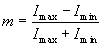

MTF och bildkvalitet
För att beskriva kvaliteten i en optisk avbildning eller annat optiskt instrument behöver man ett standardiserat mått på upplösning (förmåga att särskilja små detaljer) och konstrast (normaliserad intensitetsskillnad mellan mörka och ljusa partier.
Information om bägge dessa får man genom det som kallas MTF (Modulation Transfer Function) vilken är en funktion av linjetäthet (spatial frekvens), för vilka modulationen mäts i objekt och bild, varefter kvoten bildas.
Modulation defineras som och för att definera MTF behöver vi objekt med så bra modulation som möjligt. Ofta väljer man då randmöster med sinusformigt varierande intensitet. Imin blir då 0 vilket gör att modulationen blir 1. Det är uppenbart att allteftersom vi byter till objekt med högre och högre spatial frekvens blir skillnaden mellan mörker och ljus mindre. När vi inte längre ser bilden av objektet är ju Imax=Imin och modulationen blir 0. Vidare finns det ett direkt samband mellan ett optiskt systems förmåga att avbilda en skarp kant och hög MTF för höga spatialfrekvenser. En skarp kant och ett sinusmönster med hög frekvens innehåller ju bägge snabba variationer i intensitet. Med fourieranalys kan man sedan (fast vi inte gör det) visa att alla bilder kan delas upp i spatialfrekvenser där höga frekvenser alltid motsvarar skarpa kanter.
MTF blir alltså en kurva som börjar på 1 för låga frekvenser och sedan på olika sätt sjunker mot noll. Den spatialfrekvens där vi kommer ner till modulationen noll brukar kallas upplösningsgräns eller på suverän svenska cut-off-frekvens.
Testa själv sambandet mellan olika MTF funktioner och förmågan att avbilda ett svartvitt randmönster. Man kan (utan att editera filen) välja mellan tre olika former på MTF-kurva och godtyckligt värde på gränsfrekvens (1 motsvarar ett linjepar på fyra pixlar på skärmen, dvs lägre värde kommer att vara skärmbegränsat). Gaussisk MTF är typisk för aberrationer, sinc för felfokusering och rect för diffraktion i koherenta system.Vidare kan man ur ett MTF diagram läsa av fler saker än högsta upplösbara spatialfrekvens.
Ett lågt och konstant värde för låga frekvenser betyder mycket ströljus i systemet. Smuts har ofta denna effekt på linser. Det innebär att kontrasten blir dålig även för grova linjer.